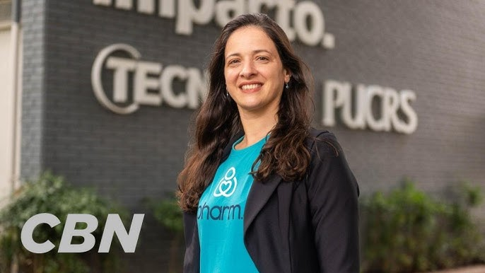

Ana Helena é cofundadora da NoHarm – plataforma de gerenciamento
de receitas e medicamentos de código aberto que usa IA para
avaliar, fazer um ranqueamento das prescrições mais críticas a
fim de ajudar farmacêuticos a organizar seu trabalho, reduzindo
ineficiências na análise de prescrição de medicamentos em
hospitais, clínicas e centros de cuidados.
o sistema da NoHarm funciona como um “marca texto automático”
que, integrado ao prontuário eletrônico do paciente, aponta
inconsistências em tempo real – auxiliando farmacêuticos a
evitar erros, como doses altas ou baixas demais, a prevenir
desperdícios e a reduzir o risco de interação medicamentosa.

A plataforma é utilizada por mais de 1 mil profissionais na
tomada de decisão, em 200 instituições de saúde de todas as
regiões do Brasil (inclusive na Amazônia, como mostrou uma
reportagem da Revista Rest of World). Segundo a empresa, mais de
5 milhões de receitas são analisadas por mês com auxílio da
startup. A cobrança ocorre por leito (de R$ 42 a R$ 52,50) em
hospitais privados; o preço cai conforme aumentam os pacientes
atendidos — e a solução, diz Ana Helena, é cedida gratuitamente
a hospitais atendidos pelo SUS.
A revista americana Time produziu uma lista das cem pessoas mais
influentes no mundo da Inteligência Artificial.
Nomes como Elon Musk, Sam Altman e Mark Zuckerberg, claro,
aparecem na classificação.
Ou seja, a lista é repleta de empresários e executivos que estão
moldando esse campo que é hoje visto como o futuro da indústria
da tecnologia e Ana Helena também faz parte desta lista.